Stories and highlights
There's always something to celebrate at our school! From exciting events to proud moments and everyday wins, here are some of our highlights.
A year at our school
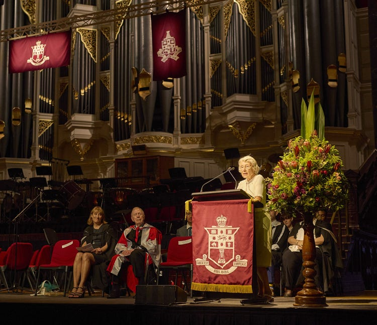
Speech Day In February we held our annual Speech Day. The gathering at Sydney Town Hall, is an opportunity to celebrate the outstanding achievements of our students and it is wonderful to be able to share this occasion with parents and former Fortians in such a beautiful venue. Our guest speaker, Professor Margaret Burgess, Fortian from the Class of 1954, shared her insightful reflections including her memories of starting at Fort Street during the Centenary year. Additionally, Auslee Pamintuan, the School Dux of 2024, delivered a wonderful valedictorian speech, making particular mention of his gratitude to his cohort.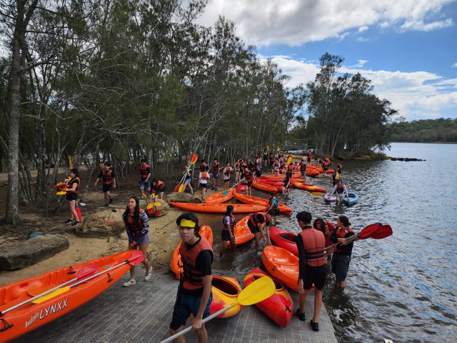
Year 11 Life Ready Camp Year 11 attended the Life Ready Camp at the Sydney Academy of Sport and Recreation at Narrabeen. Life Ready is a course mandated by the Department of Education designed to prepare students for situations related to health and safety they may encounter as they grow into more independent people increasingly responsible for themselves and others. It was a busy time divided across a range of outdoor activities and a suite of sessions on topics such as independence, relationships, sexual health.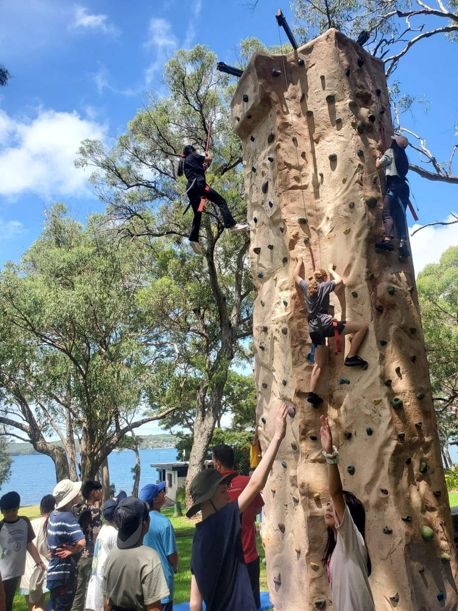
Year 7 camp The Year 7 Camp was held at Point Wolstoncroft Sport and Recreation Centre. During the camp, students had the opportunity to participate in a range of activities including: raft building, canoeing, sailing, archery, team challenge, standup paddleboard and teacher and peer support led sessions in the day and evening.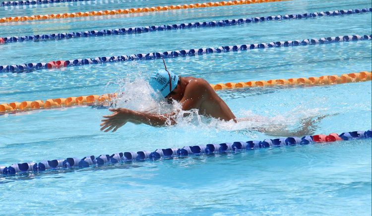
Swimming Carnival The swimming carnival proved to be a resounding success again this year, with a commendable turnout from our students. Mawson’s enthusiasm and house spirit saw them win the hotly contested house chant – congratulations to them! There were also action-packed inflatables house races that proved to be lots of fun. It was great to witness enthusiastic student participation in various events, setting a positive tone for the upcoming fiercely contested Kennedy Cup.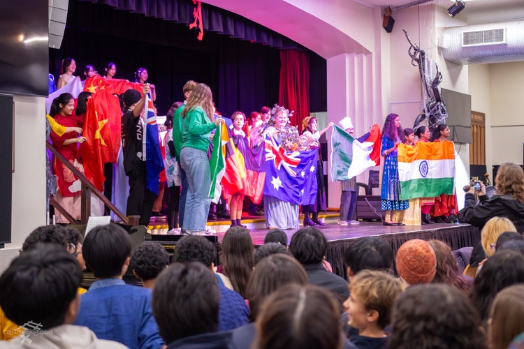
Multicultural Day Multicultural Day was held in August with over 20 different cultural stalls open at recess and lunch in the Kilgour Quad to showcase the incredible cultures that make up our school community. Students were invited to wear their best cultural dress and represent their culture. The SRC also hosted a Multicultural Day assembly, including our flag bearing parade and some wonderful student cultural performances.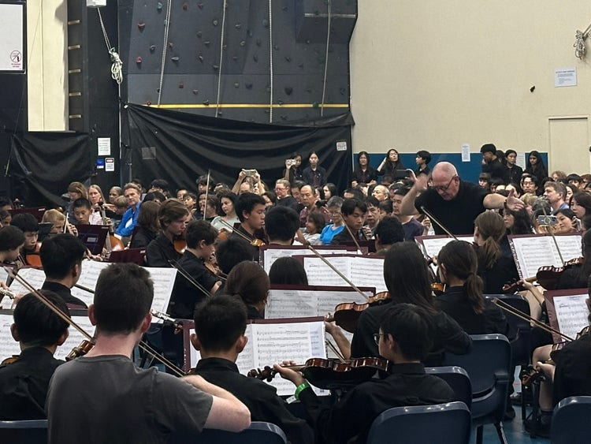
IMP Camp IMP camp, held from 21-23 March, was a huge success with 186 participants and 22 amazing conducting and tutoring staff. Students spent the weekend immersed in music, in the beautiful natural setting of CRU Galston Gorge, culminating in a spectacular final concert featuring diverse range of music from Romantic, Modern Classical and Jazz through to Taiko drumming and the Beatles. Rather than being a rehearsal camp for our regular ensemble, at IMP Camp we form 16 entirely new ensembles for the weekend, in which the focus is on skill-building through the repertoire we play. The development of all of the students in such a short space of time was phenomenal to see!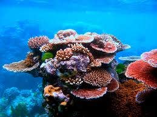
Great Barrier Reef Tour Year 12 Geography students travelled to Cairns and The Great Barrier Reef to supplement and enrich the classroom learning outcomes in the Ecosystems at Risk and People and Economic Activity units. The excursion included a range of activities including snorkelling on the Great Barrier Reef, participation in longitudinal research fieldwork,lectures from marine biology academics and a tour of an aquaculture enterprise.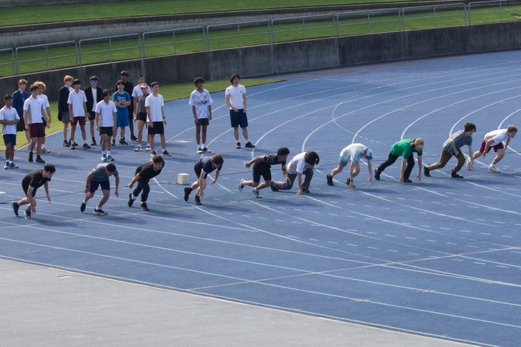
Athletics Carnival The school athletics carnival was held at SOPAC, Homebush. It was great to see that our carnival is not just about competition; it’s about coming together as a community to celebrate our talents, support our peers, and create memories. Fortians from all year groups sprinted down the track, soared through the air in long jump, and cheered from the side-lines, their presence and participation making for a great event.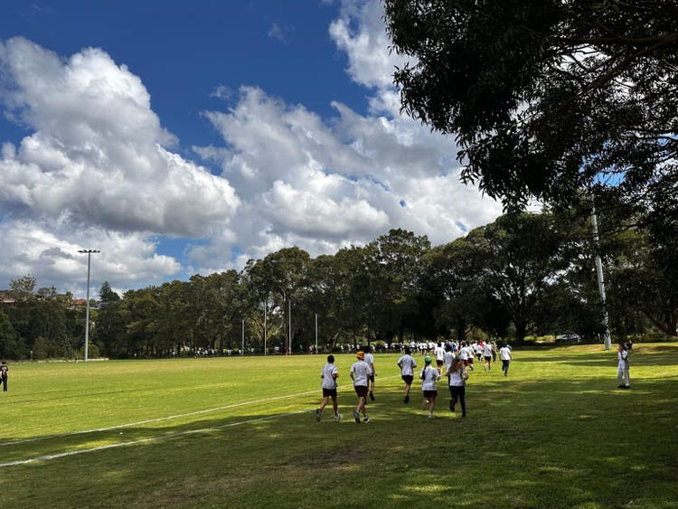
Cross Country Carnival The whole school Cross Country event was a huge success again this year held at HJ Mahoney Memorial Park in Marrickville. The students enjoyed great weather and also a fundraising sausage sizzle. Congratulations to Preston, who once again won the house championship.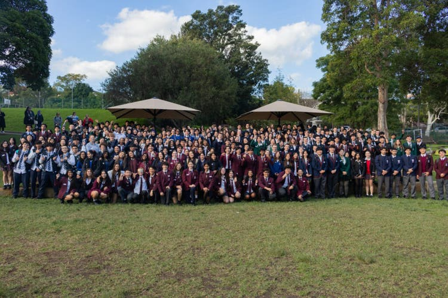
The SRC Future Leaders Conference The SRC Future Leaders Conference was a tremendous success, bringing together over 300 student leaders from 55 schools across Sydney. Held at Fort Street, the conference provided an invaluable opportunity for students to meet, exchange ideas, and be inspired by a lineup of exceptional keynote speakers. Highlights included insights on leadership and success from Bree Chisolm (Fortian 1997) a distinguished magistrate of the NSW Local Court, Mark Loughran who spoke of his remarkable journey overcoming chronic fatigue syndrome to becoming the 5th Dan Black Belt and Head Instructor at the Australian Martial Arts Academy, and Charishma Kaliyanda MP current State member for Liverpool. The second session featured a dynamic panel discussion with academic and broadcaster Dr. Sunil Badami, Steve Brogan Chief of Policy and Research at Infrastructure Australia, Anne Thompson a planet optimist and founder of WornUp and Barend Van Der Poll a trained electrical engineer now Head of Asset Management at Tilt Renewables. Students also had the opportunity to network with peers from other schools and participated in student-led workshops, reflecting on leadership. This conference was a shining example of student voice and agency in action, and a great showcase for Fort Street demonstrating the remarkable capabilities of Fortians.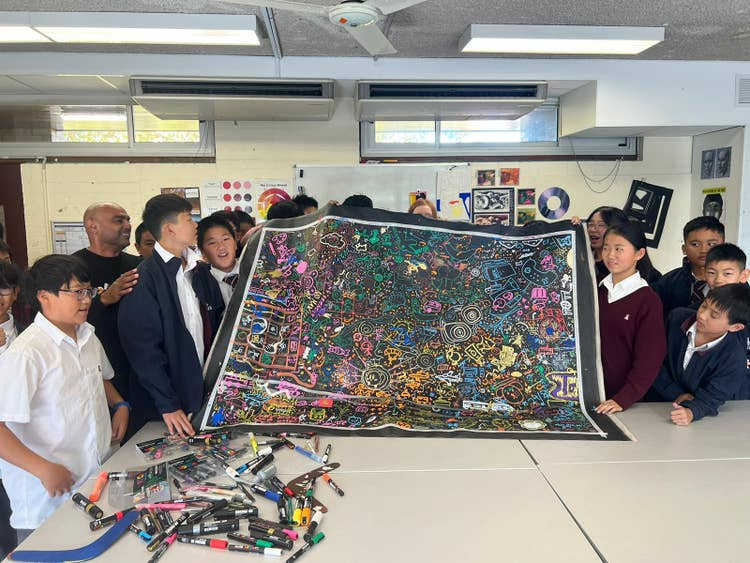
Reconciliation Week Fort Street celebrated National Reconciliation week. The theme for this year’s Reconciliation Week was “Bridging Now to Next,” which reflects the ongoing connection between past, present and future. The FSHS Reconciliation Action Committee has been working on a Reconciliation Action Plan for our school. In keeping with First Nations tradition of expressing ideas through symbols, our Reconciliation Action Plan will be captured in the visual form of a mural. This mural will focus on the action plan’s five pillars, and art students from each year have been collaborating with Mr Orcher, a proud Murrawarri and Gumbaynggirr artist who shares his experiences using both digital and contemporary mediums, creating compelling and thought-provoking artworks. At the start of the term Year 7 worked with Philip to create artworks that depicted their life experiences and surroundings, and last week art students from Years 8, 9, 10, 11 and 12 drew elements inspired by an individual pillar, with great success.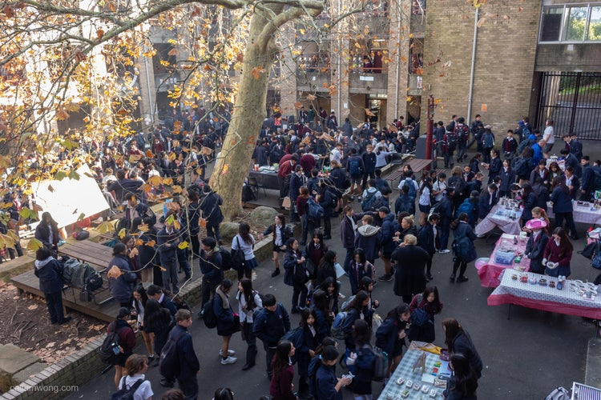
Year 10 Commerce Stalls Year 10 students held the annual stalls day. The weeks leading up to the stall day were filled with rigorous planning. Food was tested, posters were made and menus were curated. By the time the day arrived, they were all filled with anxious excitement, today was the day all the pieces would fall into place. Food offerings included churros, HSPs, tiramisu, dumplings, curry, pancakes and ice cream, candy floss, banh mi, ramen, tteokbokki, meat skewers, nachos, scones, sausage sizzle and so much more!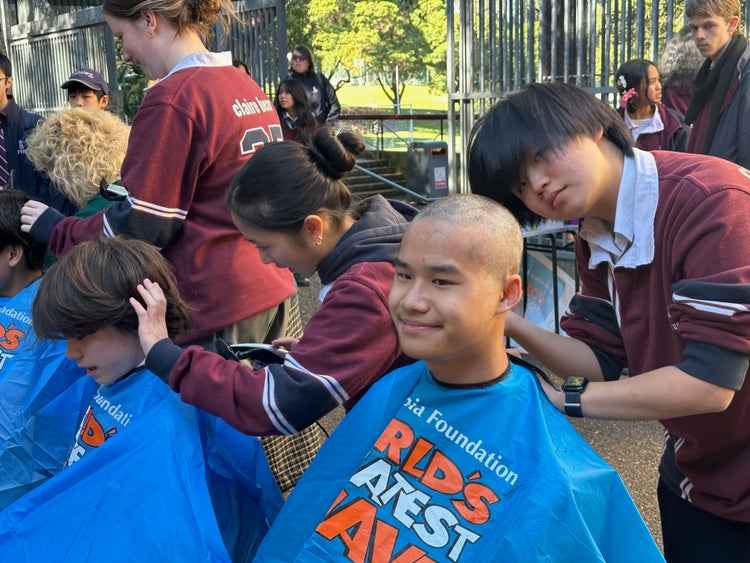
World’s Greatest Shave This year, Year 12 proudly led the school community in participating in the World’s Greatest Shave, a Fort Street tradition and an initiative run by the Leukaemia Foundation to raise money and awareness for Australians living with blood cancer. Fundraising has been taking place throughout the school year, with one of the early highlights being the colourful hair-spraying at our Cross Country Carnival. Students and staff coloured their hair in house colours and came together in a vibrant display of support and solidarity. Together, we’re proving that small actions can make a big difference.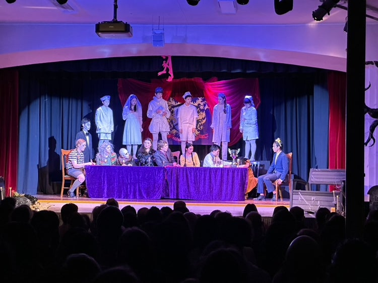
The Addams Family Musical The audience laughed, cried and were occasionally spooked by the members of the Addams family. We had a HUGE audience, especially on the Friday night of over 300 people. There was the cast of actors as well as the accompanying band who provided all of the music. The CAPA team are so proud of all students involved and the huge efforts that took place over the last 12 months to prepare for the show.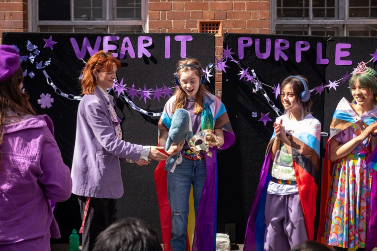
Wear It Purple Day The Diversity Committee planning came into fruition for Wear-It-Purple Day. The day was an explosion of colour, glitter and hairspray provided by Diversity Committee members in Upper Kilgour during lunch! The food stall was once again very popular. The rainbow biscuits, brownies and cakes disappeared in a flash. Thanks to the staff, students and parents who helped contribute to make this fundraiser a success!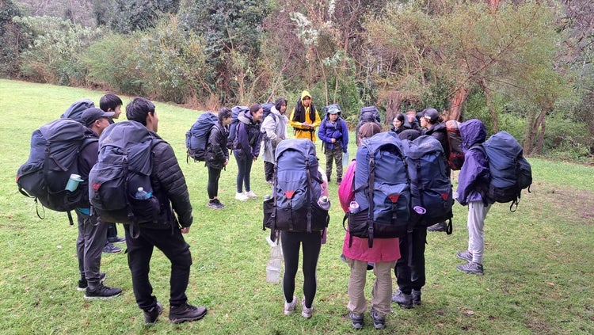
Bronze Duke or Edinburgh All Year 9 students completed their adventurous journey component of the Duke of Edinburgh program with a 3 day camp at Camp Somerset. Students were required to not only hike but also camp, carry all of their own equipment, prepare their own food and practice navigation and route planning, expedition reports and teamwork.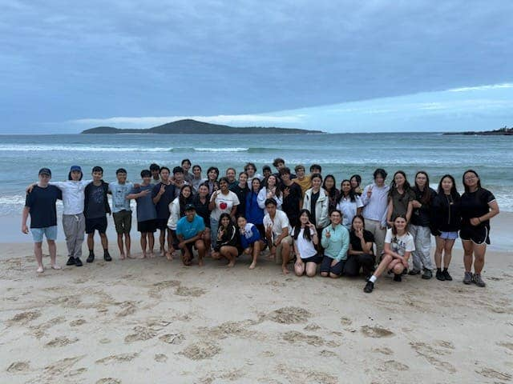
Silver Duke of Edinburgh Award Qualifying Hike Students travelled to Nelson Bay and took the Tomaree National Park Coastal Walk. They stayed at Fingal Bay and then continued their hike to Middle Rock, The group also visited the Port Stephen's Koala Sanctuary for a guided educational tour of the rehabilitation facility and the Koala Hospital. The group then continued their walk on the Tomaree Coastal Walk from Middle Rock to Burubi Point Surf Club.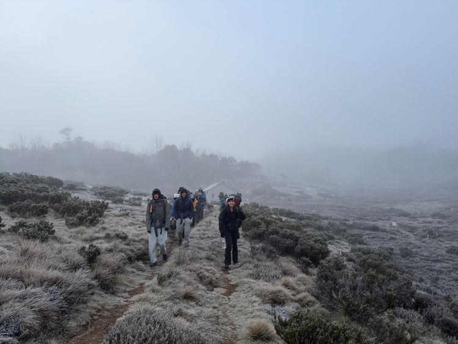
Gold Duke of Edinburgh Our Gold Duke of Edinburgh group successfully completed their gold qualifying hike in the beautiful Snowy Mountains. The expedition included navigating through alpine terrain and three evenings of camping. The students showed strong navigational skills and resilience, adapting to the challenging conditions of the hike. They also worked exceptionally well as a team.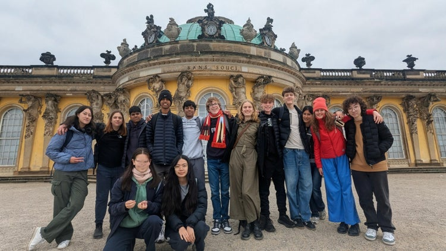
German study tour Students from Year 10 and 11 stayed with host families from Fort Street’s sister school, the Georg Büchner Gymnasium, giving them an invaluable opportunity to experience German culture up close, and get to know the incredible city of Berlin from a local standpoint. They spent a day at a German school, explored the famous historical sights of Berlin, such as the Brandenburger Tor (Gate) and the Fernsehturm (East German TV tower), visted the Holocaust Memorial, as well as the Bundestag, the parliamentary building, rich in German history. In Munich they visited the Rathaus Glockenspiel’s, Allianz Arena, home ground of Bayern München.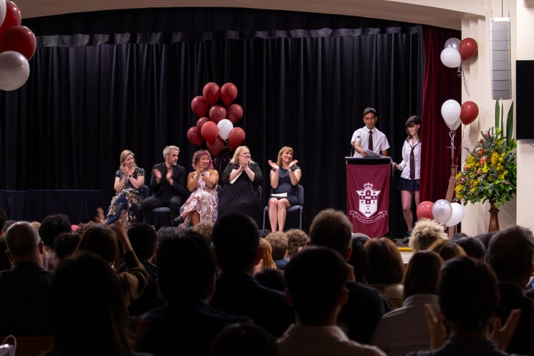
Year 12 Graduation In the students last week at school there were many activities including a farewell breakfast, activities, picnic day and graduation ceremony. Students and teachers get to spend time celebrating their time at Fort Street before starting their preparations for the HSC exams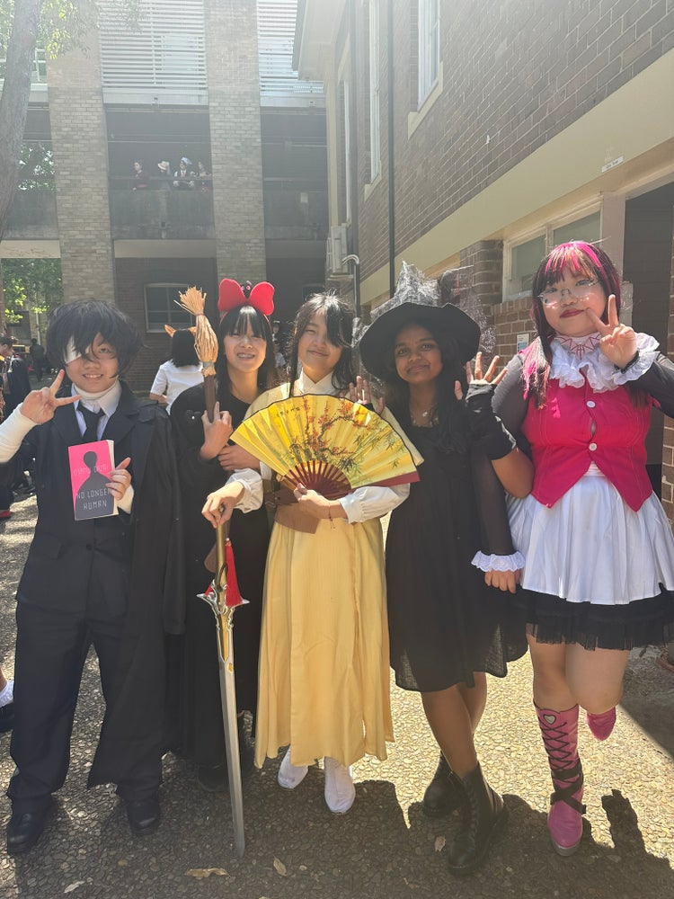
Halloween There was something SPOOKY in the air today at the Fort when The SRC organised a wonderful Halloween celebration and students and staff joined in the fun. There were some fabulous costumes. Even famous Olympic Break dancer Ray Gun made an appearance! Decorations were placed around the school including in the library. The careers office even had some recommendations for “creepy career choices”.
Fort Street has been a fantastic high school for our son.
It’s a community of families and staff who value education, well being and students achieving their potential, rather than a narrow focus on achieving high marks.
The teachers are of a very high standard and are available to students who want to get more help and support.
— Emma, a parent of Fort Street High School
Discover more highlights
Visit our Facebook for more photos, videos, events and updates from our school.
Have a story to share?
Do you have a great school moment to share? We’d love to hear from you!
- Events Find out about school events, celebrations and what’s coming up. east
- Our community Discover ways to volunteer and help shape our school community. east